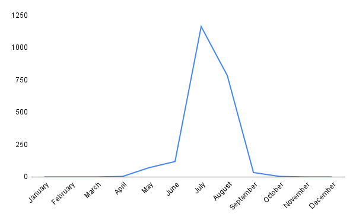

Melissodes rivalis

Scientific Classification
Kingdom
Phylum
Class
Order
Family
Tribe
Genus
Subgenus
Species
Binomial Name
Melissodes rivalis
Melissodes rivalis Cresson, the western thistle long-horned bee, is a specialized species of Nearctic bee native to, and occurring in, the western united states (Laberge, 1956a). Like all Melissodes, male M. rivalis have long antennae, and the females have short antennae in comparison (see "Genus" page for more information). This species resides in the subgenus M. (Eumelissodes) Laberge, and is closely related to M. desponsus (treated more thoroughly in “Taxonomy and Phylogeny”) . Both sexes of M. rivalis are somewhat distinct from other M. (Eumelissodes) Laberge, and the females can be distinguished by their often parallel inner eye portions, the dark brown to black hairs of inner surfaces of the hind bastitarsi, and the pale pubescent bands on the terga, which are often present on terga three, two, or, four, if not, then usually white pubescence is present laterally on at least one of the terga (Laberge, 1956a; Laberge, 1961). If there is still no white hairs on the terga, then females can also be distinguished by the patch of black mososcutal hairs that surpasses the size of the dark patch of hairs on the scutellum (Laberge, 1956a). Males can be distinguished from that of other M. (Eumelissodes) Laberge by their first flagellar segment, which is longer than, or equal to, two-fifths the maximum length of the second, pale pubescent bands present on terga two, three, often four, and often five, and by the clypeaus’ often darkened posterior edge (see “Description and Identification” for more information on both sexes) (Laberge, 1956a; Laberge, 1961). M. rivalis is seemingly an oligolege of the genus Cirsum, hence their common name, in which the females use this plant’s pollen to provision their nests (Laberge, 1956a).
Description and Identification
Based on Laberge's (1956a) description, Melissodes rivalis are medium sized setacouse bees. Females range from 12 to 17 millimeters in length and 4.5 to 6.0 millimeters in width (width measured at the widest portion of the metasoma). Males are a bit smaller, being about 11 to 16.5 millimeters in length and 4 to 5 millimeters in width (width measured at the widest portion of the metasoma). The female's first flagellar segment is on average 2.03 times the size of the second flagellar segment (standard deviation 0.036). The males are the opposite where the second flagellar segment is on average 2.88 times the size of the first flagellar segment (standard deviation 0.062). Female wing length is 25.14 millimeters on average (standard deviation 0.339 millimeters), and male wing length is 23.94 millimeters on average (standard deviation 0.088 millimeters). Females have an average of 15.25 hamuli (standard deviation 0.367), while males have an average of 13.85 (standard deviation 0.318).
Female
According to Laberge (1956a), the description of female M. rivalis is as follows: the integument is black, differing at the eyes, which are usually grayish blue; the wing membranes, which are infumate brown; the wing veins, which are black; the apical half of the mandibles, which are rufescent, and in the apical area of the apical half, there is a wide golden macula; the underside of flagellar segments 2-10, which are reddish brown; the distitarsi, which is dark red; the tegulae, which are piceous; and the tibial spurs, which are piceous. The surface of the clypeus is somewhat shiny, but dulled with coarse transverse shagreening, and has punctures that are small, crowded, and separated by less than one puncture diameter. The inner eye portions are parallel to one another (Fig. 1). The clypeus has a distinct longitudinal carina medially in the apical half, but also sometimes shorter (Fig. 2). The surface of the supraclypeus is dulled with coarse reticular shagreening, and has large, deep, well-defined, round punctures. The surface of the flattened area of the vertex is shiny to moderately, finely shagreened, and has deep and small round punctures that are variably separated. In some places, the punctures are separated by less than half a puncture diameter, and in others by more than half, but less than two puncture diameters (< ½ < 2). This flattened area extends posteromedially from the apices of the compound eyes. The four maxillary palpal segments decrease in length from basal to distal in a ratio of about 3.5:2.5:2.5:1.0, and the last segment is usually even smaller. The galeae are dorsally shiny, shagreened apically and laterally, and have small widely separated punctures with small straight hairs arising from them. The mesonotum is slightly dull with fine reticular shagreening and has coarse punctures. These punctures are anteriorly and marginally separated by less than half a puncture diameter, and they’re slightly larger and sparse, mostly separated by a minimum of two puncture diameters, posteromedially in front of the posterior slope. However, the scutellum is very similar to the rest of the mesonotum, but has absent or finer shagreening. The surface of the metanotum is dulled by tessellation, and has variably spaced, scattered punctures. The propodeum’s dorsal surface is basally reticulorugose and is coarsely punctate apically and on the posterior surface excluding the upper impunctate median triangle on the posterior surface. The lateral surfaces of the propodeum are matte and dull from coarse, dense tessellation, and are coarsely punctate. The lateral surfaces of the mesepisterna are fairly dull from irregular shagreening, and have large and shallow punctures that are separated by less than half a puncture diameter. These punctures are very dense medially, with some overlapping and merging into one another, but dorsally and posteriorly, they become smaller and more distinct.
The first tergum is dulled and has a latitudinal line of closely spaced punctures that appear just slightly past the middle of the tergum posteriorly. This line of punctures is separated posteriorly from the small, round, shallow, and abundant basal punctures in the medial four-fifths; punctures seemingly connect laterally (Fig. 3). The second tergum is dull and has tiny deep round punctures at the very base, the interband zone has small crowded lateral punctures, but is generally impunctate medially, and the apical zone has tiny sparse punctures laterobasally. The third and fourth terga are similar to that of the second, but the punctures are more abundant in the apical and interband zones and smaller.
M. rivalis can vary in setal coloration; the two extremes are as follows. The darkest specimens have black to dark brown head hairs, except for the vertex and face, which are completely pale ochraceous, and sometimes a mix of ochraceous and dark brown. Laberge (1956a) states “Metasoma with pale ochraceous hairs except as follows:...” then proceeds to list mesosomal structures, and later states “Mesosoma with dark brown to black hairs except as follows:...” then proceeds to list metasomal structures. This is most likely a typo and will be herein treated as such. The mesosomal hairs are pale ochraceous except for the large posteromedian patch of dark brown to black hairs on the mesoscutum that usually surpasses the anterior margins of the tegulae, but usually isn’t larger than the size of the scutellum (Fig. 4), and the medial dark brown to black hairs on the scutellum. The tegulae and pronotal lobes have dark hairs. The general surfaces of the mesepisterna have dark brown to black hairs and the lateral surfaces have dark brown hairs on the lower two thirds and sometimes higher. The lateral surfaces of the propodeum also have dark brown to black hairs. The metasoma has dark brown to black hairs except for the basal area of the first tergum, which has long dark brown hairs (Fig. 5), and the basal band of the second tergum, which usually has some pale hairs. The leg hairs are dark brown to black other than the ochraceous to yellow scopa, and the dark red to black hairs on the inner surfaces of the hind tibia and hind basitarsi. The palest specimens have white to grayish white head hairs, except for the vertex which has some brown hairs. The surfaces of the mesepisterna have white to pale ochraceous hairs. The pronotal lobes have white to pale ochraceous hairs. The large posteromedian patch of dark brown to black hairs on the mesoscutum reaches the middle portion of the tegula across the mesoscutum, and sometimes surpasses it. The first tergum has long pale basal hairs. The basal band of the second tergum is white, and the distal band is pale ochraceous, narrowed medially, usually interrupted medially, and does not reach the apical margin. The third and fourth tergum have a distal pale band of pubescence, and the band of the fourth tergum is usually positioned apically. The fifth tergum has small white lateral tufts of hairs. The second, third, and fourth sterna have reddish brown hairs medially, and pale hairs apicolaterally. The inner surfaces of the fore basitarsi have red to reddish brown hairs, along with the inner surfaces of the middle bastitarsi, hind bastitarsi, and hind tibia.
M. rivalis ranges in setal color between these two dark and pale descriptions. As M. rivalis progressively lightens from the dark extreme to the pale extreme, the pale tergal hairs start to appear. These pale hairs first develop on the base of the first and second tergum. Next, lateral pale pubescence develops on the second tergum, then the third, and subsequently the fourth. Lastly, lateral pale tufts develop on the fifth tergum. In the palest specimens, the lateral pale pubescence become complete bands, reaching completion in the same order as the appearance of the lateral pale pubescence.

Fig. 1. A comparison of the inner eye margins of a femal M. rivalis (left), and a female M. agilis (right), illustrating the parallel nature of the inner eye mergins of the female M. rivalis. Photo credits: Christopher Wilson (All Rights Reserved).

Fig. 2. A labeled diagram showing the longitudinal carina of the clypeus of a female M. rivalis. Photo credit: Christopher Wilson (All Rights Reserved).

Fig. 3. A labeled diagram showing the latitudinal line of closely spaces punctures on T1 of a female M. rivalis. Photo credit: Christopher Wilson (All Rights Reserved).
Male
According to Laberge (1956a), the description of male M. desponsus is as follows: the integument is black, differing at the eyes, which are green to gray; the wing membranes, which are slightly infumate and brown colored; the wing veins, which are black; the clypeus, which is paleish yellow (posterior margin of the paleish yellow area is angled upward to form an upside down V-shape in the median one-third) , excluding the brownish red apical margin and the black laterobasal notches denoting the tentorial depressions (Fig. 6)(in individuals from the eastern portion of its range, the posterior margin of the clypeus usually becomes infuscated from the tentorial depressions to the middle); the underside of flagellar segments 2-10, which are yellow to red; the distitarsi, which is dark reddish brown; the sterna, which are dark reddish brown; the apices of the terga, which are usually dark reddish brown; the tegulae, which are piceous; and the tibial spurs, which are piceous. The first flagellar segment’s minimum length is usually no less than one-third the maximum length of the second segment (as stated above), if not more (Fig. 6). The remainder of the characteristics are the same as the female described above except as follows: the punctures of the clypeus are smaller and denser than that of the female; the surfaces lateral areas of the vertex are usually dull with shagreening; the first tergum’s basal four-fifths is punctate medially with small shallow punctures, and these punctures reach the apex of the tergum laterally; the second tergum’s interband zone has small punctures with undefined edges that are sometimes, be it very rarely, sparser than those of the interband zones on terga 3 and 4; the sixth sternum is shiny without shagreening, has basal small deep punctures, has distinct oblique carinae laterally positioned near the apex, a truncated apical edge, and a short median concavity positioned posteriorly in the apical half between the apices of the aforementioned carinae.
In his M. rivalis description, Laberge (1956a) wrote a comparative treatment of the male terminalia, comparing it to M. desponsus. However, the only terminalia descriptions for male M. desponsus are those of figures 114-117 from Laberge (1956b). Herein, the male terminalia for M. rivalis will be based on figures 8-11 provided in Laberge (1956a) and figures 114-117 provided in Laberge (1956b). The seventh sternum does not narrow into a short neck, but instead is mounted to the rest of the sternum by around seven-eights of the full sternal width. This can create a notch-like structure on the lateral interior portions of the seventh sternum when looking at it dorsally. The apical half of the second sternum is almost two times as large as the basal half creating a fan-like shape, and has several hairs ventrally on the apical. The 8th sternum usually has a patch of relatively long hairs apicomedially, and, at the base of this patch, the hairs shorten. The gonostylus is somewhat relatively slender with a few hairs dorsally, is less than one-half the length of the gonocoxite, and in the apical one-third, it tapers slightly. The penis valve has a prominent dorsolateral lamella; the basal end of the lamella ends in an inflected tooth.
M. rivalis can vary in setal coloration; the two extremes are as follows. The darkest specimens have white to pale ochraceous head hairs, except for the vertex, which has brown hairs. The mesosoma has white to ochraceous hairs except for the mesoscutum, which has a patch of dark brown hairs that reaches anteriorly past the middle of the tegulae, and the scutellum, which has some dark medial hairs. The first tergum has long basal pale hairs, and short dark apical hairs. The second tergum has a basal pale pubescent band as well as a distal pale pubescent band. The distal pubescent band is complete, medially narrowed, and separated from the apical margin. The third tergum’s distal pale pubescent band is medially interrupted with brown hairs. Terga four, five, six, and seven do not have any pale hairs. The legs mostly have pale hairs (Fig. 7), especially on the outer surfaces of the middle and hind tibiae, except for the inner surfaces of the hind tibiae, the fore basitarsi, the middle basitarsi, and the hind basitarsi, which are red to reddish brown. The palest specimens are similar to that of the darkest specimens except as follows: the hair on the head is completely white to pale ochraceous, and has no dark hairs on the vertex. The mesosoma has completely white to pale ochraceous hairs with no dark patches on the mesoscutum or the scutellum. Terga 2-5 have complete pale pubescent bands, and tergum 6 has long pale lateral tufts. Sterna 2-5 have red hairs medially, and pale ochraceous hairs laterally, and the sixth sternum has entirely brown hairs. The legs have white to ochraceous hairs, except for the inner surfaces of the hind tibiae, fore basitarsi, middle basitarsi, and hind basitarsi, which are red, and the hairs on the outer surfaces of the fore tarsi and fore tibiae, which are brown.
M. rivalis ranges in setal color between these two dark and pale descriptions. As M. rivalis progressively lightens from the dark extreme to the pale extreme, the pale tergal hairs start to appear. These pale hairs first develop laterally on the fourth tergum. Then, lateral pale pubescence develops on the fifth tergum, and the pale band of the third tergum interrupted with brown hairs becomes complete. Next, the lateral developed pale hairs on the fourth and fifth terga meet medially creating complete bands, as this happens, the dark hairs on the head and thorax turn pale. Lastly, on the palest individuals, the dark hairs on the scutellum turn pale.
Fig. 6. A labeled diagram showing the ranging irregular clypeal marking of 2 male M. rivalis individuals.
Fig. 7. A labeled diagram showing the pubescent coloration of the legs of a male M. rivalis.
Location and Habitat
M. rivalis is a somewhat common Cirsum oligolect occurring in the western portions of North America. M. rivalis can be found in every U.S. state west of a longitudinal line drawn from southeastern Texas to north central Minnesota, as well as southwestern Canada, and northern Mexico (Fig. 1). Although Laberge (1956a) previously stated that M. rivalis only occurs in a range from northern California, southern British Columbia, southern Manitoba, and southern Texas, recent collections suggest that its range extends north to central British Columbia , and south to northern Mexico (Discover Life, Ascher & Pickering, 2025) (Fig. 1). M. rivalis is a highly variable species in regards to morphological traits as shown above. The following locational variability is derived from Laberge (1956a). The darkest specimens of both sexes were located in humid coastal areas of Oregon and California. These dark females are quite distinct, so much so that they were originally described as M. desponsiformis in 1905 by Cockerell (treated more thoroughly in “Taxonomy and Pylogeny”). However, the males located in this area that are assigned the “dark” variety (as this is where the dark females reside), are very similar to, and can’t be distinguished from, “paler” males located further inland from British Columbia, Washington, Oregon, and California. Coastal and inland specimens seemingly gradient in color across the landscape, and a discernable subspecies is likely unviable for this region. While not explicitly stated by Laberge (1956a), it is reasonable to assume specimens collected along the Rocky Mountain regions, North Dakota, Minnesota, Saskatchewan and Manitoba are somewhat lighter, possibly nearing intermediate colors of vestiture, than those of coastal populations. Although few specimens have been recorded in these locations, both sexes of M. rivalis collected in New Mexico, Kansas, and Texas are pale and seem to be strikingly distinct from ones collected in the Rocky Mountain areas. Interestingly, females collected in Arizona are pale, similar to those collected in southeastern prairie states, and males are instead dark, similar to those collected in the Rocky Mountain areas, so much so, it’s difficult to differentiate the two. Overall, individuals residing in the upper most parts of the United States and the southern portion of Canada, as well as Utah and Colorado are, in color, intermediate compared to the darker coastal populations of California and Oregon, and the paler populations of the southeastern prairie states. Even with this broad statement, many populations near one another differ in vestiture brightness. Male clypeal markings differed based on location as well, lightening from the darkest specimens, based on how large the posterior infuscation was (i.e. the smaller the infuscation, the lighter the clypeus), in the following order: 1) Arizona, 2) Oregon, northern California, 3) southeastern Utah, 4) western North Dakota, southern Manitoba, eastern Wyoming, northeastern Colorado, 5) New Mexico, eastern North Dakota, Texas, and Kansas. However, males from southern Idaho and northern parts of the Californian coast had predominantly pale clypei. This, along with the dark clypei of males in Arizona and Utah is somewhat irregular as the rest of the clypei follow a smooth gradient across the landscape. Based on the range of M. rivalis, the darkest clypei of the males are located in the northwest and the lightest in the southeast and northeast, with a few aforementioned irregularities.
Fig. 9 Map showing an estimation for the known distribution for M. (Eumelissodes) rivalis. Each point represents 1 or more occurrences; occurrences that don't have coordinates are not included. Data compiled from DiscoverLife (Ascher & Pickering 2025) and GBIF (Secretariat 2023).
Fig. 10 A conceptually similar figure to that illustrated by Wilson & Carril (2016), showing the phenological activity of M. rivalis, but was independently redrawn for this study with updated information. The x value is the month, and the y value is the number of documented observations. Data compiled from DiscoverLife (Ascher & Pickering 2025) and GBIF (Secretariat 2023).
Bionomics
Very little is known in regards to the nesting behaviors of M. rivalis. Veit, M.F. et al. (2022), showed a new host-parasite relationship between M. rivalis and Triepeolus obliteratus, as they saw this parasitic bee entering a female M. rivalis nest. This is further validated by two GBIF observations from Massachusetts, in which several T. obliteratus were seen flying around the nesting area in search of (Veit M., McFarland K., 2024b), and actively entering (Veit M., McFarland K., 2024a) M. rivalis nests (these observations may have been used in the aforementioned paper). The female’s nests have been observed nesting in sandy open areas (Veit M., McFarland K., 2024c; McCarthy, M., 2020), and amongst low vegetation (Veit M., McFarland K., 2024b). As stated above, M. rivalis is a likely oligolect of Pontederia, specifically Pontederia cordata, or Pickerelweed. As shown by Seago, J.L. et al (2000), Pontederia cordata is a wetland obligate, and with this being M. rivalis’ source of pollen, they too most likely rely on the wetlands in which their host-plant grows. This bee has also been reported to forage for nectar in “ambient dry-mesic to dry sand prairies” as well as oak barrens (Rericha-Anchor, L., 2024). The specialization in its plant-host is most likely the reason for M. rivalis’ long hooked galeal hairs as they may be an adaptation for extracting the pollen from deep tubular recesses of Pontederia cordata flowers (Laberge, 1956a).
Flower records
All flower records included in this list are from reports in the literature. Each flower has a parenthesized reference listed after it, corresponding to the literary work in which it was recorded. Cirsum sp. (Laberge, 1963), Hydrocotyle sp. (Mitchell, 1962), Melilotus alba (Laberge, 1963), Oenothera speciosa (Laberge, 1963), Pontederia sp. (Laberge, 1963), Pontederia cordata (Laberge, 1956a), Stachys floridana (Laberge, 1963), Trifolium hybridum (Laberge, 1963).
Taxonomy and Phylogeny
M. apictus was originally described in 1906 by Lovell and Cockerell under the name “Melissodes apicata”. When first described, M. rivalis was given no subgenus, and was compared against M. illata (now M. illatus), M. simillima (now M. druriellus), and M. perplexa (now M. denticulatus), notably differing from the three by the bands on the terga reaching the apex across the entirety of their respective tergum (Lovell and Cockerell, 1906). In part one of his revision of Melissodes, Laberge introduced the subgenus M. (Eumelissodes) Laberge which he later noted in his second revision (Laberge, 1956b) was previously supposed to include only two species, those being M. rivalis and M. fimbriata. However, as new species were discovered and described, they were found to exhibit the same traits as those in M. (Eumelissodes) Laberge, thus extending the species pool within the subgenus (Laberge, 1956b). M. rivalis is quite a distinct species within its subgenus, often having three maxillary palpal segments as opposed to the four segmented palpi that are common amongst other Melissodes (Laberge, 1956). Little taxonomic reclassification has occurred concerning M. rivalis. The only changes that have currently taken place arose when the fourth edition of the International Commission on Zoological Nomenclature (ICZN) was released in 1999, and article 30.1.4.4 was added. This article stated if a genus with the suffix -odes (i.e. Melissodes) was not assigned a specific gender by the author who proposed it, then the genus becomes masculine. When Melissodes was proposed in 1829 by Latreille, he included no statements deeming the name “Melissodes” to be feminine or masculine, therefore, the genus became masculine. According to ICZN, species and genus names must make gender agreement. Because the suffix -a (i.e. apicata) is feminine and the genus name is now masculine, the species name also had to be updated with a masculine suffix; the suffix -us is masculine hence “rivalis” instead of “apicata”. There have since been no taxonomic changes in regards to M. rivalis.
Literature Cited
1. LaBerge, W.E. (1956a) ‘A revision of the bees of the genus melissodes in north and
Central America. part II (hymenoptera, Apidae)’, The University of Kansas science
bulletin, 38(8), pp. 533–578. doi:10.5962/p.376392.
2. LaBerge, W.E. (1956b) ‘A revision of the bees of the genus melissodes in north and Central America. part I.
(Hymenoptera, Apidae)’, The University of Kansas science bulletin, 37(18), pp. 911–1194. doi:10.5962/bhl.part.24549.
3. Ascher, J.S. & Pickering, J. (2025). Discover Life bee species guide
and world checklist (Hymenoptera: Apoidea: Anthophila): Data records. Discover Life. Available at:
https://www.discoverlife.org/mp/20q?guide=Apoidea_species (Accessed 30 October 2025).
4. GBIF.org (08 November 2025) GBIF Occurrence Download, DOI available at time of access: https://doi.org/10.15468/dl.jghu9p.
Archive preserved at Zenodo: https://doi.org/10.5281/zenodo.175606262
5. International Commission on Zoological Nomenclature (ICZN). 1999. International Code of Zoological Nomenclature (Online). Edited by Ride, W.D.L.,
Cogger, H.G., Dupuis, C., Kraus, O., Minelli, A., Thompson, F.C. & Tubbs, P.K. International Commission on Zoological Nomenclature.
Available at: https://code.iczn.org/ (Accessed: 7 November 2025)
6. Wilson, J.S. and Messinger Carril, O.J. (2016) The bees in your backyard: A guide to North America’s bees. Princeton, NJ: Princeton University Press.